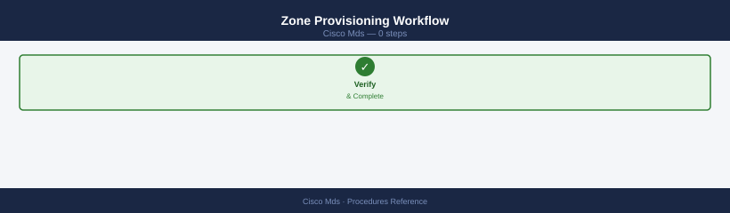
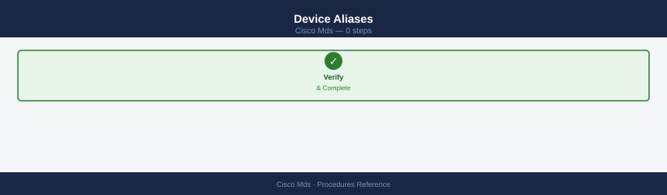
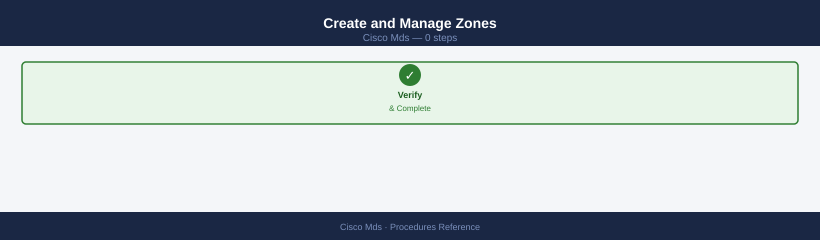
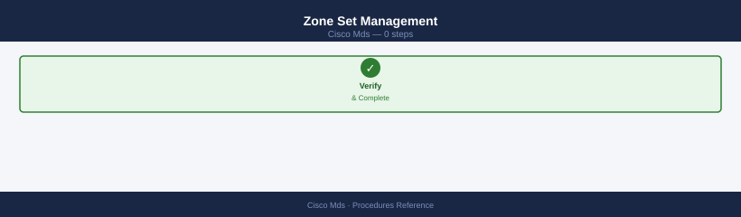
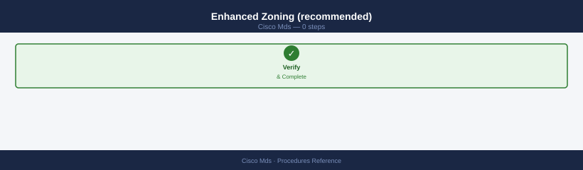
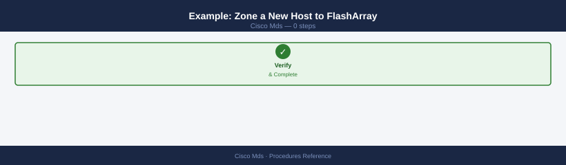
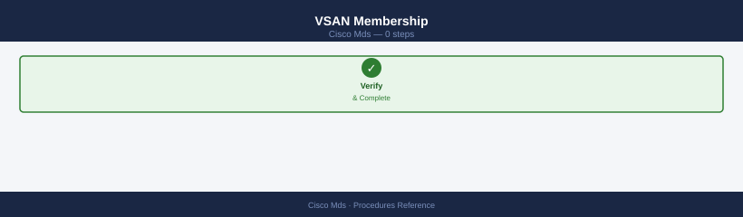
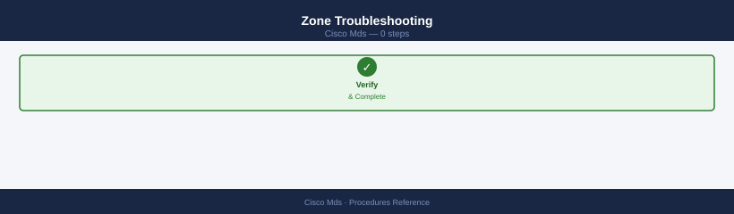
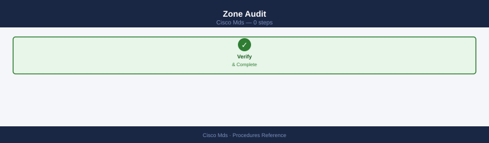

MDS — Procedures¶
Before you begin¶
- Access: Storage admin credentials (cluster admin or equivalent)
- Timing: safe to run during business hours unless a step is marked ⚠ (causes interruption)
- Dependencies: no active upgrades or migrations on the same infrastructure
- Logging: capture command output — paste into the change record on completion
Change Readiness¶
- [ ] Configuration backup taken:
show running-configoutput saved to jump host - [ ] Both fabrics (Fabric A and Fabric B) are healthy before touching either
- [ ] VSAN configuration documented: all VSANs, membership, and active zonesets recorded
- [ ] Zoning change reviewed and approved — peer review of zone diff completed
- [ ]
show flogi databasebaselined: full list of logins captured before change - [ ] Maintenance window approved and communicated to affected storage and compute teams
- [ ] Rollback plan confirmed: procedure to restore zone config or revert VSAN change documented
| Item | Status | Notes |
|---|---|---|
| Running config backup | show running-config to jump host |
|
| Both fabrics healthy | show interface brief on all switches |
|
| VSAN config documented | VSAN-to-port mapping recorded | |
| Zone diff peer-reviewed | Ticket reference | |
| Change window approved | Ticket reference |
Maintenance Window¶
- Confirm both fabrics are healthy:
show interface briefandshow flogi databaseon all switches - Take configuration backup:
copy running-config startup-configand saveshow running-configto jump host - Notify storage and compute teams that Fabric A (or B) will be affected
- Perform the change on one fabric only — leave the other fabric carrying full host I/O
- After change, run
show interface brief,show flogi database, andshow zoneset active vsan allto confirm state - Validate host multipath paths are still active via host-side tools
- Review
show logging last 50for any errors introduced by the change - Repeat procedure on second fabric only after first fabric is fully validated and hosts confirmed healthy
Post-Change Validation¶
- [ ] All FC interfaces back in connected/up state:
show interface brief - [ ] FLOGI database complete — all hosts and storage logged in:
show flogi database - [ ] Active zoneset matches expected post-change config:
show zoneset active vsan all - [ ] No new error or critical syslog entries since change:
show logging last 50 - [ ] Environment still healthy — no new hardware alerts:
show environment - [ ] Running config saved to startup config:
copy running-config startup-config - [ ] Host multipath paths active and balanced (confirmed via host-side tool)
- [ ] Close change ticket with validation evidence attached
Zoning¶
Zone Provisioning Workflow¶

Device Aliases¶

Create and Manage Zones¶

# Create zone and add members
switch# zone name esxi01_hba0__fa01_ct0_p0 vsan 10
switch(config-zone)# member device-alias esxi01_hba0
switch(config-zone)# member device-alias fa01_ct0_p0
switch(config-zone)# member device-alias fa01_ct0_p1
switch(config-zone)# exit
# Remove a member
switch# zone name esxi01_hba0__fa01_ct0_p0 vsan 10
switch(config-zone)# no member device-alias fa01_ct0_p1
switch(config-zone)# exit
switch# zone name esxi01_hba0__fa01_ct0_p0 vsan 10
switch(config-zone)# member device-alias esxi01_hba0
switch(config-zone)# member device-alias fa01_ct0_p0
switch(config-zone)# member device-alias fa01_ct0_p1
switch(config-zone)# exit
switch# zone name esxi01_hba0__fa01_ct0_p0 vsan 10
switch(config-zone)# no member device-alias fa01_ct0_p1
switch(config-zone)# exit
switch#
Common errors
% Invalid command — Verify the device-alias names exist in the switch configuration using show device-alias database.
% Zone member already exists — Remove the duplicate member first with no member device-alias <name> before re-adding it.
Zone Set Management¶

# Create zone set and add zones
switch# zoneset name dc1-fabA-prod vsan 10
switch(config-zoneset)# member esxi01_hba0__fa01_ct0_p0
switch(config-zoneset)# member esxi01_hba1__fa01_ct1_p0
switch(config-zoneset)# exit
# Activate zone set
switch# zoneset activate name dc1-fabA-prod vsan 10
# Commit to fabric and save
switch# zone commit vsan 10
switch# copy running-config startup-config
switch# zoneset name dc1-fabA-prod vsan 10
switch(config-zoneset)# member esxi01_hba0__fa01_ct0_p0
switch(config-zoneset)# member esxi01_hba1__fa01_ct1_p0
switch(config-zoneset)# exit
switch# zoneset activate name dc1-fabA-prod vsan 10
Zoneset activation initiated. Please wait...
Zoneset "dc1-fabA-prod" activated successfully for VSAN 10.
switch# zone commit vsan 10
Zone commit in progress...
Zone commit completed successfully for VSAN 10.
switch# copy running-config startup-config
[########################################] 100%
Configuration saved successfully.
Common errors
% Invalid VSAN ID — Verify the VSAN exists with show vsan and use a valid VSAN number between 1–4094.
% Zone member not found — Confirm the zone member name exists in the fabric using show flogi database vsan 10 before adding it to the zoneset.
% Zoneset activation failed: conflicting zones detected — Review existing zone configurations with show zoneset active vsan 10 and resolve overlapping member definitions before reactivating.
Enhanced Zoning (recommended)¶

# Enable enhanced zoning — default-deny for non-zoned devices
switch# zone mode enhanced vsan 10
# Confirm
switch# show zone status vsan 10
# Mode: Enhanced
switch# zone mode enhanced vsan 10
switch# show zone status vsan 10
VSAN: 10
Admin Mode: enhanced
Operation Mode: enhanced
Default Zone Access: deny
Session ID: 0x60a8c2d1
Default Zone Reject Frames: 0
Broadcast and Multicast Frames: 0
Unicast Frames: 0
Common errors
% Invalid command — Verify the VSAN exists with show vsan and confirm you have zone admin privileges.
% VSAN 10 does not exist — Create the VSAN first using vsan database and vsan 10 activate commands.
% Zone mode change will activate after session exit — Exit the current session or use no system session timeout to apply changes immediately.
Example: Zone a New Host to FlashArray¶

# 1. Add device aliases
switch# device-alias database
switch(config-device-alias-db)# device-alias name web01_hba0 pwwn 10:00:00:90:fa:ab:cd:ef
switch(config-device-alias-db)# device-alias name web01_hba1 pwwn 10:00:00:90:fa:ab:cd:f0
switch(config-device-alias-db)# exit
switch# device-alias commit
# 2. Create zone (Fabric A — VSAN 10)
switch# zone name web01_hba0__fa01_ct0_p0 vsan 10
switch(config-zone)# member device-alias web01_hba0
switch(config-zone)# member device-alias fa01_ct0_p0
switch(config-zone)# exit
# 3. Add to active zone set
switch# zoneset name dc1-fabA-prod vsan 10
switch(config-zoneset)# member web01_hba0__fa01_ct0_p0
switch(config-zoneset)# exit
# 4. Activate and save
switch# zoneset activate name dc1-fabA-prod vsan 10
switch# zone commit vsan 10
switch# copy running-config startup-config
# Repeat on Fabric B switch / VSAN for HBA1
Device-alias database opened for edit session.
Device-alias name web01_hba0 pwwn 10:00:00:90:fa:ab:cd:ef configured.
Device-alias name web01_hba0 pwwn 10:00:00:90:fa:ab:cd:ef is in use.
Device-alias name web01_hba1 pwwn 10:00:00:90:fa:ab:cd:f0 configured.
Device-alias database closed.
Device-alias committed successfully.
Zone name web01_hba0__fa01_ct0_p0 created.
Zone member device-alias web01_hba0 added.
Zone member device-alias fa01_ct0_p0 added.
Zoneset name dc1-fabA-prod created.
Zoneset member web01_hba0__fa01_ct0_p0 added.
Activating zoneset dc1-fabA-prod in VSAN 10...
Zoneset dc1-fabA-prod activated successfully.
Zone commit in VSAN 10 completed.
[#] 100.0%
Copy complete.
Common errors
Device-alias name web01_hba0 pwwn 10:00:00:90:fa:ab:cd:ef is in use. — Run device-alias delete name web01_hba0 before re-adding, or use a unique device-alias name.
Zone member device-alias fa01_ct0_p0 not found. — Create the device-alias fa01_ct0_p0 in the device-alias database before adding it to the zone.
Zoneset activation failed: conflicting zone configuration. — Run zoneset deactivate name <current-zoneset> vsan 10 to deactivate the active zoneset before activating a new one.
VSAN Membership¶

# Show which ports are in a VSAN
switch# show vsan 10 membership
# Assign a port to a VSAN
switch# vsan database
switch(config-vsan-db)# vsan 10 interface fc1/5
switch(config-vsan-db)# exit
switch# copy running-config startup-config
VSAN 10 Membership Information
===============================
Interface VSAN Status Speed
fc1/1 10 trunking 8 Gbps
fc1/2 10 trunking 8 Gbps
fc1/5 10 trunking 8 Gbps
fc2/3 10 online 4 Gbps
fc2/8 10 online 4 Gbps
---
(no output — command completes silently)
(no output — command completes silently)
(no output — command completes silently)
(no output — command completes silently)
[########################################] 100.0%
Copy complete.
Common errors
% Invalid command — Verify you are in the correct mode; use vsan database to enter VSAN configuration mode before assigning ports.
% VSAN 10 does not exist — Create the VSAN first with vsan 10 in VSAN database mode before assigning interfaces to it.
Zone Troubleshooting¶

| Symptom | Command | Action |
|---|---|---|
| Host HBA not logged in | show flogi database vsan 10 |
Check cable, SFP, port state; check VSAN assignment |
| Host can't see storage | show zone name <zone> vsan 10 |
Confirm alias pWWNs are correct; zone set active |
| Zone set not active | show zoneset active vsan 10 |
Run zoneset activate name <zset> vsan <n> |
| Device alias commit fails | show device-alias status |
Resolve conflicts; check for duplicate aliases |
| Changes not persisted | show startup-config \| include zone |
Run copy running-config startup-config |
| Two hosts in same zone | show zone vsan 10 |
Split into single-initiator zones |
Zone Audit¶

# List all zones in VSAN — review for multi-initiator zones
switch# show zone vsan 10
# Check what a specific device can reach
switch# show zone member pwwn 10:00:00:90:fa:12:34:56 vsan 10
# Show fabric name server — all visible devices
switch# show fcns database vsan 10
# Diff running vs active zone set (catch uncommitted changes)
switch# show zone vsan 10
switch# show zoneset active vsan 10
switch# show zone vsan 10
zone name zone_prod_lun01 vsan 10
member pwwn 10:00:00:90:fa:12:34:56
member pwwn 10:00:00:90:fa:12:34:78
zone name zone_prod_lun02 vsan 10
member pwwn 10:00:00:90:fa:12:34:9a
member pwwn 10:00:00:90:fa:12:34:bc
zone name zone_dev_lun03 vsan 10
member pwwn 10:00:00:90:fa:12:34:de
switch# show zone member pwwn 10:00:00:90:fa:12:34:56 vsan 10
pwwn 10:00:00:90:fa:12:34:56 is in the following zones:
zone_prod_lun01
switch# show fcns database vsan 10
VSAN 10:
FC4-Types: FCP
Fabric Port Name: 10:00:00:90:fa:12:34:56
Port Index: 0x010001 Flags: 0x00
Device Alias: hba-esx01-fc0
Port Type: N_Port
Class: 3
IpAddress: 10.100.50.12
Fabric Port Name: 10:00:00:90:fa:12:34:78
Port Index: 0x010002 Flags: 0x00
Device Alias: storage-array-01-port-a
Port Type: N_Port
Class: 3
...
switch# show zone vsan 10
zone name zone_prod_lun01 vsan 10
member pwwn 10:00:00:90:fa:12:34:56
member pwwn 10:00:00:90:fa:12:34:78
switch# show zoneset active vsan 10
zoneset name prod_zoneset vsan 10
zone name zone_prod_lun01 vsan 10
member pwwn 10:00:00:90:fa:12:34:56
member pwwn 10:00:00:90:fa:12:34:78
zone name zone_prod_lun02 vsan 10
member pwwn 10:00:00:90:fa:12:34:9a
Common errors
% Invalid command — Verify VSAN 10 exists with show vsan and confirm the switch supports zoning on that VSAN.
% No matching zones found — Confirm the pwwn format is correct (16 hex digits with colons) and the device is actually zoned in VSAN 10.
Add a New Switch to an Existing VSAN¶
Connect ISL → on existing switch: vsan database; vsan <id> interface fc1/1 → on new switch: set domain ID to auto → no shutdown → verify show topology includes new switch.
# On existing switch: add ISL port to VSAN
switch# vsan database
switch(config-vsan-db)# vsan <id> interface fc1/1
switch(config-vsan-db)# exit
# On new switch: bring up ISL port
switch# interface fc1/1
switch(config-if)# no shutdown
# Verify new switch appears in fabric topology
switch# show topology
switch# vsan database
switch(config-vsan-db)# vsan 1 interface fc1/1
switch(config-vsan-db)# exit
switch# interface fc1/1
switch(config-if)# no shutdown
switch# show topology
FC Topology for VSAN 1:
Switch ID WWN Model State
-------- --- ----- -----
[1] 50:00:09:73:a1:2b:4d:01 MDS 9148S Principal
[2] 50:00:09:73:a2:5e:8c:92 MDS 9148S Principal
[3] 50:00:09:73:a3:7f:1c:45 MDS 9148S Principal
ISL Links:
Port Remote Port Remote Switch State
---- ----------- --------------- -----
fc1/1 fc1/1 [2] Up
fc2/1 fc2/2 [3] Up
Common errors
% Invalid command — Verify the VSAN ID exists with show vsan before adding the interface.
Interface fc1/1 is not online — Ensure the ISL port is physically connected and the remote switch port is also enabled with no shutdown.
VSAN <id> not found in database — Create the VSAN first using vsan <id> in vsan database mode before assigning interfaces to it.
Create a Device Alias¶
device-alias database; device-alias name host01_hba0 pwwn 10:00:00:00:00:00:00:01; device-alias commit — simplifies zone membership management.
switch# device-alias database
switch(config-device-alias-db)# device-alias name host01_hba0 pwwn 10:00:00:00:00:00:00:01
switch(config-device-alias-db)# exit
switch# device-alias commit
Common errors
% Invalid PWWN format — Ensure the PWWN is in the correct format (10 hexadecimal pairs separated by colons, e.g., 10:00:00:00:00:00:00:01).
% Device alias 'host01_hba0' already exists — Delete the existing device alias with device-alias delete host01_hba0 before creating a new one with the same name.
Create an IVR Zone (Inter-VSAN Routing)¶
Configure IVR topology → ivr zoneset name ivr_prod → ivr zone name zone_ivr_host01_array01 → add members from different VSANs → ivr zoneset activate name ivr_prod.
# Configure IVR topology
switch# ivr topology distribute
# Create IVR zone with members from different VSANs
switch# ivr zone name zone_ivr_host01_array01
switch(config-ivr-zone)# member pwwn 10:00:00:00:00:00:00:01 vsan 10
switch(config-ivr-zone)# member pwwn 50:00:00:00:00:00:00:02 vsan 20
switch(config-ivr-zone)# exit
# Add to IVR zone set and activate
switch# ivr zoneset name ivr_prod
switch(config-ivr-zoneset)# member zone_ivr_host01_array01
switch(config-ivr-zoneset)# exit
switch# ivr zoneset activate name ivr_prod
switch# ivr topology distribute
Topology distribution in progress...
switch# ivr zone name zone_ivr_host01_array01
switch(config-ivr-zone)# member pwwn 10:00:00:00:00:00:00:01 vsan 10
switch(config-ivr-zone)# member pwwn 50:00:00:00:00:00:00:02 vsan 20
switch(config-ivr-zone)# exit
switch# ivr zoneset name ivr_prod
switch(config-ivr-zoneset)# member zone_ivr_host01_array01
switch(config-ivr-zoneset)# exit
switch# ivr zoneset activate name ivr_prod
Zoneset activation in progress...
IVR zoneset 'ivr_prod' activated successfully
Common errors
% Invalid PWWN format — Verify the PWWN is in colon-separated hexadecimal format (16 characters total, e.g., 10:00:00:00:00:00:00:01).
% VSAN does not exist — Confirm both VSAN 10 and VSAN 20 are created and active on the switch before adding members.
% Zone does not exist — Ensure zone_ivr_host01_array01 is created before attempting to add it as a member to the zoneset.
Check Fabric Login Table¶
show flogi database vsan <id> — lists all logged-in devices with FCID and WWPN; confirm expected hosts and arrays present.
VSAN 1:
FLOGI Database for VSAN 1:
FC_ID Port Name Node Name Interface
010001 50:00:09:4d:1a:2b:3c:4d 50:00:09:4d:1a:2b:3c:4e fc1/1
010002 50:00:09:4d:1a:2b:3c:5e 50:00:09:4d:1a:2b:3c:5f fc1/2
010003 50:00:09:4d:1a:2b:3c:6d 50:00:09:4d:1a:2b:3c:6e fc1/3
010004 50:00:09:4d:1a:2b:3c:7d 50:00:09:4d:1a:2b:3c:7e fc1/4
010005 50:00:09:4d:1a:2b:3c:8d 50:00:09:4d:1a:2b:3c:8e fc1/5
Common errors
Invalid VSAN ID <id> — Verify the VSAN exists with show vsan and use a valid numeric ID between 1 and 4094.
% Invalid command — Ensure you are in the correct command mode (exec or config) and the MDS switch supports FLOGI database queries.
Collect NX-OS Tech-Support for TAC¶
show tech-support → save output to file; copy running-config bootflash:switch-config-backup.cfg for configuration backup.
# Collect tech-support (redirect to file)
switch# show tech-support > bootflash:tech-support-$(date +%Y%m%d).txt
# Save configuration backup
switch# copy running-config bootflash:switch-config-backup.cfg
Generating tech-support output, this may take a few minutes...
Tech-support file generated successfully.
Destination filename [switch-config-backup.cfg]?
1234 bytes copied in 1.203 secs (1026 bytes/sec)
Common errors
%Error: Invalid command — Ensure you are in the correct mode (exec mode, not config mode); use exit to return to the switch prompt if needed.
%Error: bootflash: is full — Delete old tech-support or backup files using delete bootflash:filename to free space before retrying.
Replace a Failed Module (Line Card)¶
out-of-service module <slot> → physically swap module → no out-of-service module <slot> → verify show module shows Online.
# Take module out of service
switch# out-of-service module <slot>
# -- Physical swap of line card --
# Bring module back into service
switch# no out-of-service module <slot>
# Verify module is Online
switch# show module
switch# out-of-service module 2
Module 2 is being brought out of service. This may take a few minutes.
Module 2 is now out of service.
switch# no out-of-service module 2
Module 2 is being brought into service. This may take a few minutes.
Module 2 is now online.
switch# show module
Mod Ports Module-Type Model Status
--- ----- ------------------------- ---------------- ---------
1 16 16Gb FC Module DS-X97-SF16K9 ok
2 16 16Gb FC Module DS-X97-SF16K9 ok
3 48 48-port 10Gb iSCSI Module DS-X97-48ISL-GE ok
Mod Sw Fw Hw Status
--- --------------- --------------- ----- ---------
1 9.1(1) 12.2(1s1) 1.3 active *
2 9.1(1) 12.2(1s1) 1.3 ok
3 9.1(1) 12.2(1s1) 1.4 ok
Common errors
% Invalid command — Verify the slot number exists and use the correct syntax out-of-service module <slot> without additional parameters.
Module <slot> is not in a valid state for this operation — Wait for the module to complete its current state transition (check with show module) before issuing the command again.
% Incomplete command — Provide the slot number; the command requires a module slot argument (e.g., out-of-service module 2).
Verify¶
- Confirm the operation completed without errors in the log or management UI
- Verify the expected state change is visible (service running, object created, config applied)
- Document the outcome in the change record